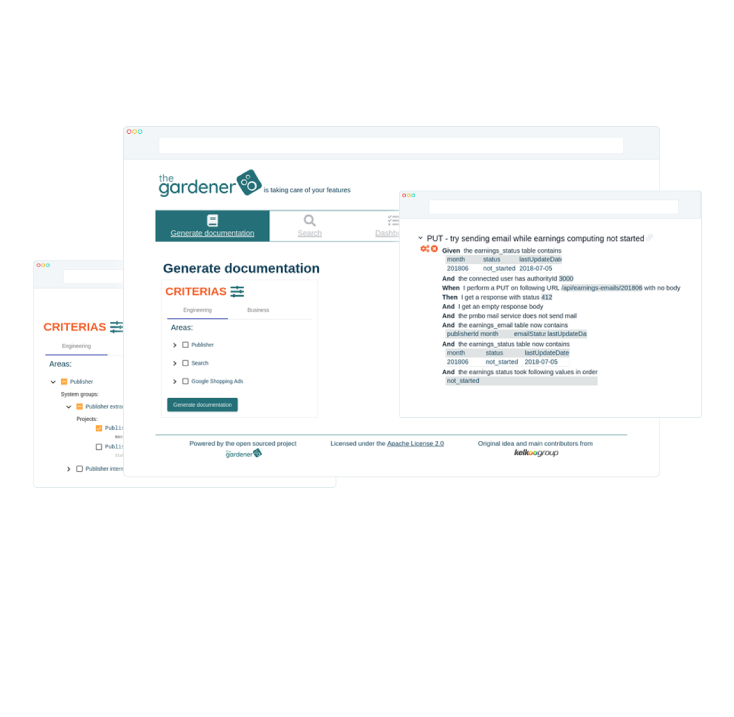

Solution
Start using theGardener !
It allow you to :
- Write your documentation in your project source code in MarkDown. As MarkDown preview is embedded in any modern IDE, you will have an immediate preview , moreover if you push your current branch you will have easily a view of the output in theGardener application before even merging your code.
- Organize your documentation in your project with as many pages and sub directories you need.
- Organize your documentation across a very large number of projects by allowing the access to the project through a tree that can be as large and as fat as you need.
- Include only the meaningful gherkin scenario exactly where you want in your documentation.
- Include OpenAPI model and endpoint description exactly where you want in your documentation.
